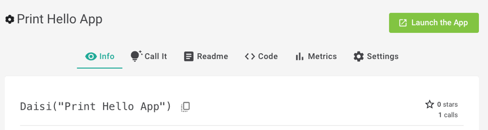
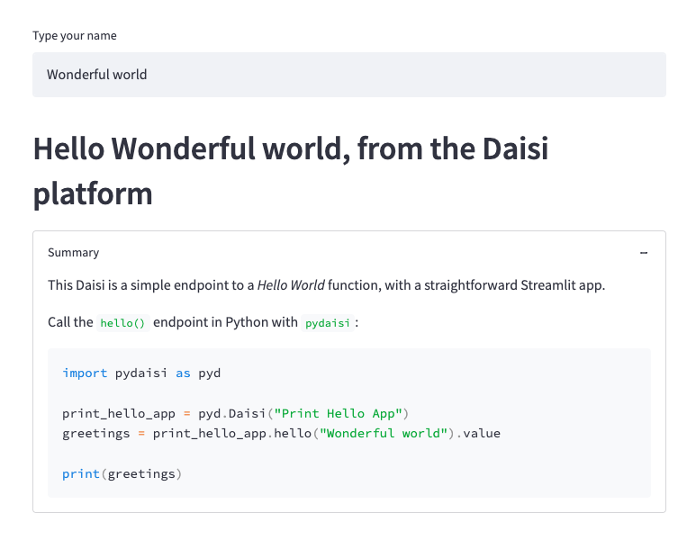

Add a UI to your Daisi¶
Showcase the capabilities of your Daisies by giving them a front-end ! The Daisi platform currently supports Streamlit. More frameworks will be supported down the road. This is a great way to let your users test and understand what your Daisies can do.
When you import streamlit in your code, the
button Launch the app will be active in the Daisi page on app.daisi.io as well as
the App button will be active on the Daisi card in the catalog.
Any Streamlit app which runs in your local environment should run similarily when deployed on the Daisi platform.
A good practice is to write the Streamlit commands inside a dedicated function and call this function in a
if __name__ == "__main__" block, so it will not be imported when the Daisi is loaded for execution. If not, it will not prevent
your Daisi to load and be executed, but it might make it slower.
Example¶
import streamlit as st
def hello(name="World"):
return "Hello " + str(name)
def st_ui():
name = st.text_input('Type your name')
st.header(hello(name))
if __name__ == "__main__":
st_ui()
Turn this code into a daisi named Print Hello App by linking its Github repo in the Daisi platform.
You have instantly an endpoint for the hello() function as well as a Streamlit app with a shareable URL.
The Launch the app button is now active in the Daisi page, as well as the App button on this Daisi's card in the catalog (see image below).

Check it out here : "Print Hello App"
UI rendering¶
Click on the Launch the App button. It will redirect you to a new browser tab displaying the app.

Invokation¶
Invoke the hello() endpoint with pydaisi :
import pydaisi as pyd
printhello = pyd.Daisi("exampledaisies/Print Hello App")
print(printhello.hello().value)
Adding documentation inside the Streamlit app¶
We strongly encourage Daisies creators to add a Markdown text in their Streamlit app wich reminds
how to call the Daisi with a straight forward example, similar to what you could put in your DAISI.md readme.
To keep the app clean, you can add the Markdown text inside an expander component, like this:
import streamlit as st
with st.expander("Summary"):
st.markdown('''A Markdown text explaining how to call the Daisi''')
After adding a Markdown text, the Streamlit app for the above Daisi renders like this :
